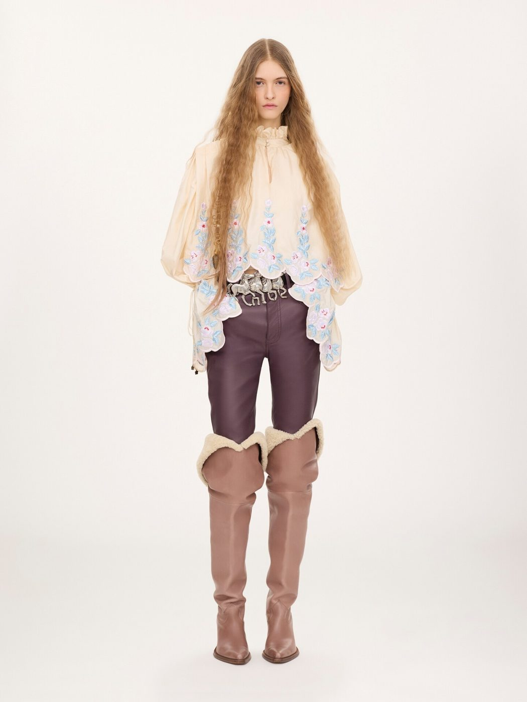
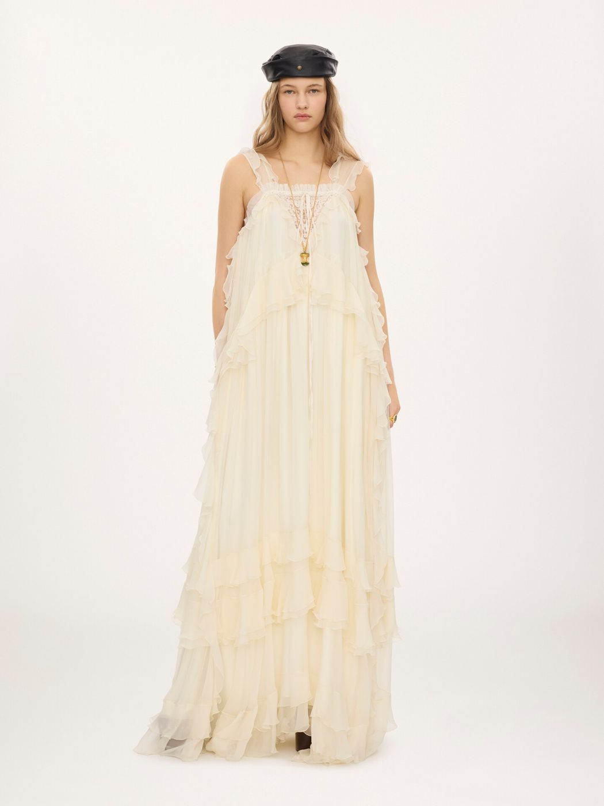
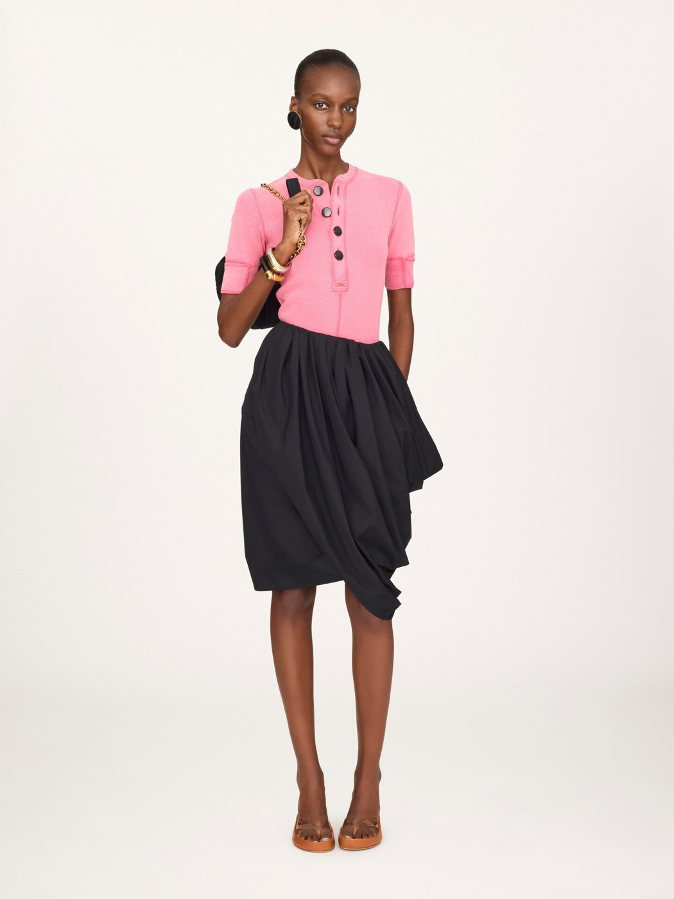
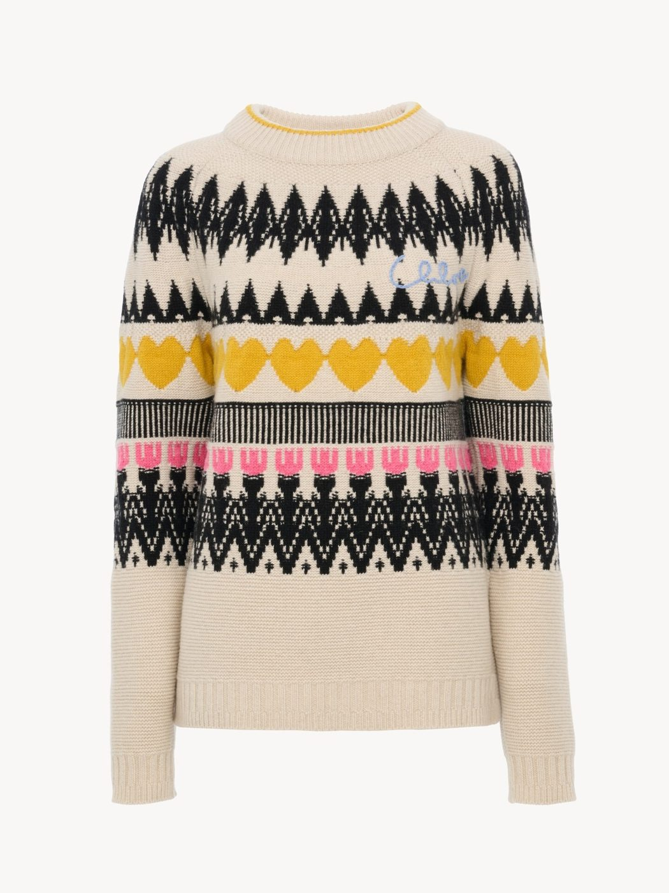
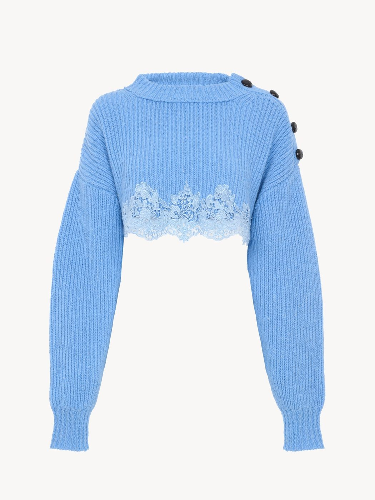
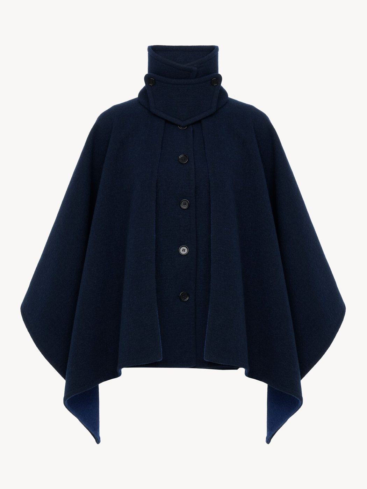
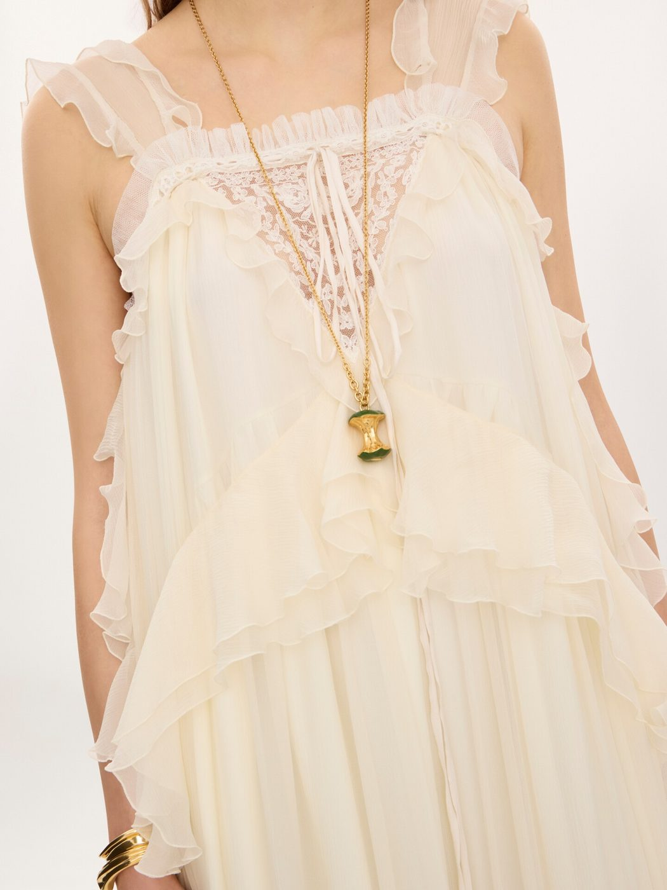

Chloé
Company study · 2026-11-23
Soft, romantic and a little undone. Chloé builds its look on cream chiffon, lace trim, scalloped embroidery and hand-feel knits, worn loose over denim, suede and boots. Oat, cream and studio white carry the base; a sky blue knit and a navy cape give the cooler notes. Detail leads: tiers, scallops, intarsia bands and lace edges. The result is relaxed glamour, light on the body.


(01)

(02)

(03)

(04)

(05)

(06)

(07)Palette · measured from images
#F8F7F5#161B26#D9C4AF#80B0E7#7D6156#D4A573Visual themes
- Soft layers
- Key motifs: tiered cream chiffon, lace-trimmed straps, a loose long dress. Sub motifs: ruffles, thin straps, sheer panels.
- Embroidered edge
- Key motifs: scalloped hems, flower embroidery on cream cotton, wide sleeves. Sub motifs: pale blue thread, ruffled collars.
- Hand-feel knit
- Key motifs: intarsia bands in cream, black, yellow and pink; a sky blue sweater with lace at the hem. Sub motifs: button shoulders, ribbed cuffs.
- Dark counterpoint
- Key motifs: a navy cape with a high collar, a draped black skirt. Sub motifs: single-button closures, asymmetric hem.
Color palette
- Studio white #f8f7f5
- The ground behind every product shot.
- Ink navy #161b26
- The cape, the draped skirt and dark trim.
- Oat #d9c4af
- Cream chiffon, cotton and knit grounds.
- Sky blue #80b0e7
- The lace-hem sweater.
- Mocha #7d6156
- Boots, suede and shadow.
- Camel #d4a573
- Suede trousers and warm knit yarns.
Visual elements
- Photography
- Product-page studio shots on a pale warm ground: a model in a standing pose, a flat view and a close view of the same piece.
- Type and graphics
- Product images carry no text; the wordmark is a thin serif in capitals.
- Layout habits
- The home page opens on large 4:5 campaign images; navigation reads Gifts, Spring 2027, Winter 2026, Bags, Ready-to-wear, Shoes, Jewelry.
Notable products
- Tiered cream dress
- Chiffon with lace trim.
- Embroidered blouse
- Cream with scalloped sleeves and hem.
- Intarsia sweater
- Cream knit with banded black, yellow and pink motifs.
Method and limits
- Palette basis
- the seven board images; k-means in Lab, six clusters kept; the pale studio ground of the product shots is part of the measurement
- Limits
- Pages read 2026-11-23: https://www.chloe.com/en-us and the product pages for a dress, a top, a skirt, a cape and two sweaters. The images are product-page shots, taken from the same file at width 1440. Models on product pages are not named on the site and are not identified here. Fabric content is not stated; colors are measured from lit, edited photographs.
Credits and licenses
(01) Cream blouse with embroidered scalloped sleeves and hem, styled with dark trousers and boots. Chloé. Brand image, study use. source
(02) Long cream dress with tiered ruffles and lace trim, full-length front view. Chloé. Brand image, study use. source
(03) Draped black skirt with a pink knit polo top, standing pose. Chloé. Brand image, study use. source
(04) Cream knit sweater with black, yellow and pink intarsia bands, flat view. Chloé. Brand image, study use. source
(05) Sky blue knit sweater with button shoulders and a lace-trimmed hem, flat view. Chloé. Brand image, study use. source
(06) Navy wool cape with a high collar and button front, flat view. Chloé. Brand image, study use. source
(07) Close view of a cream dress: lace-trimmed straps and layered chiffon. Chloé. Brand image, study use. source